Summary
This experiment investigates drum head tuning. Central composite design to maximize resonance and minimize overtones by tuning batter tension, resonant tension, and muffling amount.
The design varies 3 factors: batter torque (in-lb), ranging from 20 to 80, reso torque (in-lb), ranging from 20 to 80, and muffle pct (%), ranging from 0 to 50. The goal is to optimize 2 responses: resonance (pts) (maximize) and overtone control (pts) (maximize). Fixed conditions held constant across all runs include drum size = 14x5_snare, head type = coated.
A Central Composite Design (CCD) was selected to fit a full quadratic response surface model, including curvature and interaction effects. With 3 factors this produces 22 runs including center points and axial (star) points that extend beyond the factorial range.
Quadratic response surface models were fitted to capture potential curvature and factor interactions. The RSM contour plots below visualize how pairs of factors jointly affect each response.
Key Findings
For resonance, the most influential factors were batter torque (46.0%), reso torque (36.1%), muffle pct (17.9%). The best observed value was 8.9 (at batter torque = 50, reso torque = 50, muffle pct = 70.6435).
For overtone control, the most influential factors were batter torque (69.7%), reso torque (20.0%), muffle pct (10.3%). The best observed value was 7.6 (at batter torque = 50, reso torque = 50, muffle pct = 25).
Recommended Next Steps
- Run confirmation experiments at the predicted optimal settings to validate the model.
- Consider whether any fixed factors should be varied in a future study.
Experimental Setup
Factors
| Factor | Low | High | Unit |
|---|
batter_torque | 20 | 80 | in-lb |
reso_torque | 20 | 80 | in-lb |
muffle_pct | 0 | 50 | % |
Fixed: drum_size = 14x5_snare, head_type = coated
Responses
| Response | Direction | Unit |
|---|
resonance | ↑ maximize | pts |
overtone_control | ↑ maximize | pts |
Configuration
{
"metadata": {
"name": "Drum Head Tuning",
"description": "Central composite design to maximize resonance and minimize overtones by tuning batter tension, resonant tension, and muffling amount"
},
"factors": [
{
"name": "batter_torque",
"levels": [
"20",
"80"
],
"type": "continuous",
"unit": "in-lb"
},
{
"name": "reso_torque",
"levels": [
"20",
"80"
],
"type": "continuous",
"unit": "in-lb"
},
{
"name": "muffle_pct",
"levels": [
"0",
"50"
],
"type": "continuous",
"unit": "%"
}
],
"fixed_factors": {
"drum_size": "14x5_snare",
"head_type": "coated"
},
"responses": [
{
"name": "resonance",
"optimize": "maximize",
"unit": "pts"
},
{
"name": "overtone_control",
"optimize": "maximize",
"unit": "pts"
}
],
"settings": {
"operation": "central_composite",
"test_script": "use_cases/162_drum_tuning/sim.sh"
}
}
Experimental Matrix
The Central Composite Design produces 22 runs. Each row is one experiment with specific factor settings.
| Run | batter_torque | reso_torque | muffle_pct |
|---|
| 1 | 50 | 50 | 25 |
| 2 | 80 | 20 | 50 |
| 3 | 20 | 80 | 0 |
| 4 | 50 | 104.772 | 25 |
| 5 | 50 | 50 | 25 |
| 6 | -4.77226 | 50 | 25 |
| 7 | 50 | 50 | -20.6435 |
| 8 | 50 | 50 | 25 |
| 9 | 80 | 80 | 0 |
| 10 | 104.772 | 50 | 25 |
| 11 | 50 | 50 | 25 |
| 12 | 50 | -4.77226 | 25 |
| 13 | 50 | 50 | 25 |
| 14 | 20 | 20 | 50 |
| 15 | 50 | 50 | 25 |
| 16 | 80 | 20 | 0 |
| 17 | 50 | 50 | 70.6435 |
| 18 | 80 | 80 | 50 |
| 19 | 50 | 50 | 25 |
| 20 | 20 | 20 | 0 |
| 21 | 20 | 80 | 50 |
| 22 | 50 | 50 | 25 |
Step-by-Step Workflow
1
Preview the design
$ python doe.py info --config use_cases/162_drum_tuning/config.json
2
Generate the runner script
$ python doe.py generate --config use_cases/162_drum_tuning/config.json \
--output use_cases/162_drum_tuning/results/run.sh --seed 42
3
Execute the experiments
$ bash use_cases/162_drum_tuning/results/run.sh
4
Analyze results
$ python doe.py analyze --config use_cases/162_drum_tuning/config.json
5
Get optimization recommendations
$ python doe.py optimize --config use_cases/162_drum_tuning/config.json
6
Multi-objective optimization
With 2 competing responses, use --multi to find the best compromise via Derringer–Suich desirability.
$ python doe.py optimize --config use_cases/162_drum_tuning/config.json --multi
7
Generate the HTML report
$ python doe.py report --config use_cases/162_drum_tuning/config.json \
--output use_cases/162_drum_tuning/results/report.html
Features Exercised
| Feature | Value |
|---|
| Design type | central_composite |
| Factor types | continuous (all 3) |
| Arg style | double-dash |
| Responses | 2 (resonance ↑, overtone_control ↑) |
| Total runs | 22 |
Analysis Results
Generated from actual experiment runs using the DOE Helper Tool.
Response: resonance
Top factors: batter_torque (46.0%), reso_torque (36.1%), muffle_pct (17.9%).
ANOVA
| Source | DF | SS | MS | F | p-value |
|---|
| Source | DF | SS | MS | F | p-value |
| batter_torque | 4 | 12.0377 | 3.0094 | 0.893 | 0.5061 |
| reso_torque | 4 | 7.5661 | 1.8915 | 0.562 | 0.6967 |
| muffle_pct | 4 | 1.5561 | 0.3890 | 0.115 | 0.9737 |
| Lack | of | Fit | 2 | 5.4879 | 2.7439 |
| Pure | Error | 7 | 23.5800 | | |
| Error | 9 | 29.0679 | 3.3686 | | |
| Total | 21 | 50.2277 | 2.3918 | | |
Pareto Chart
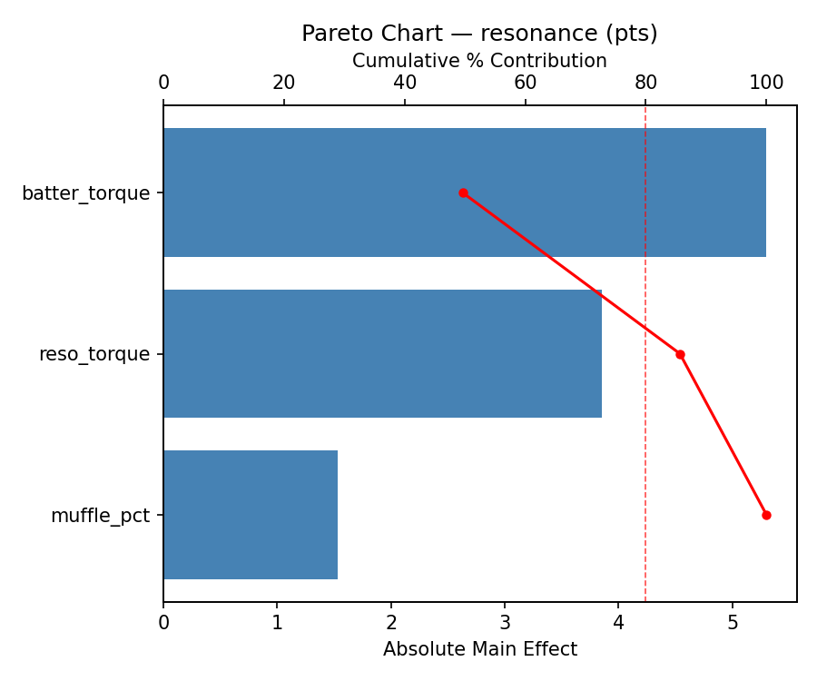
Main Effects Plot
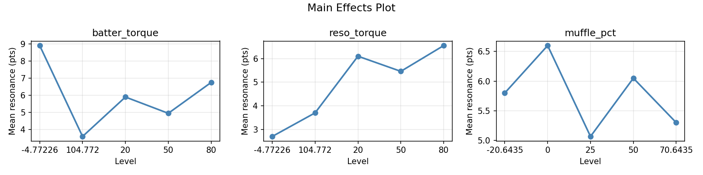
Normal Probability Plot of Effects
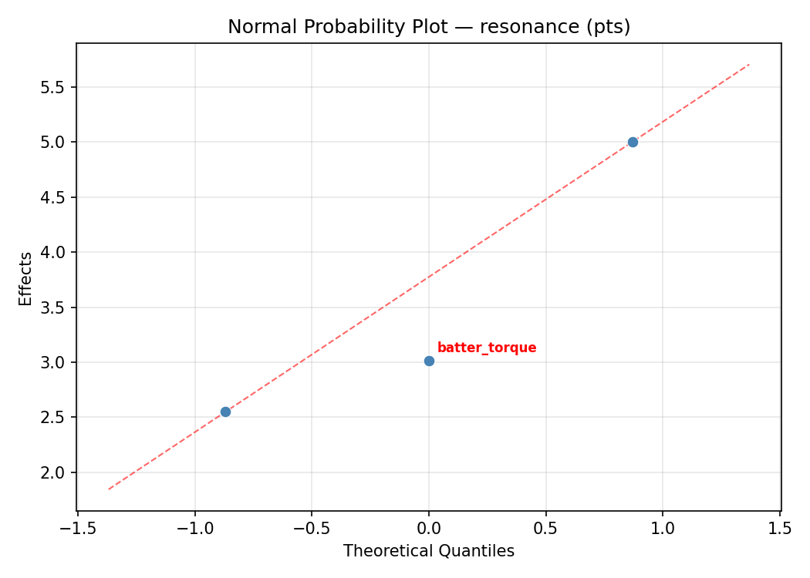
Half-Normal Plot of Effects
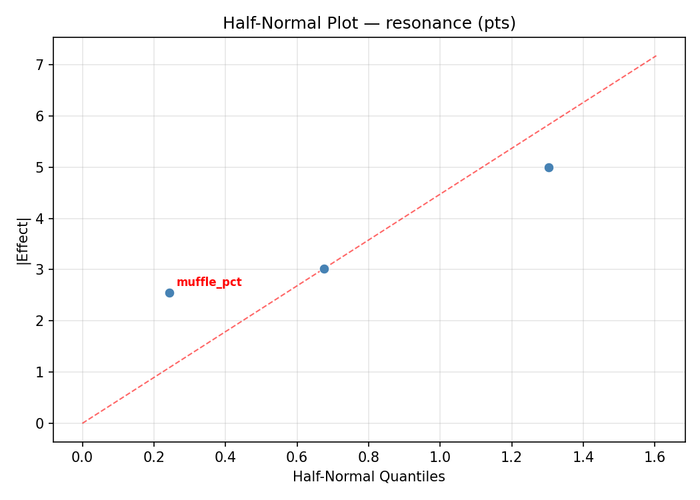
Model Diagnostics
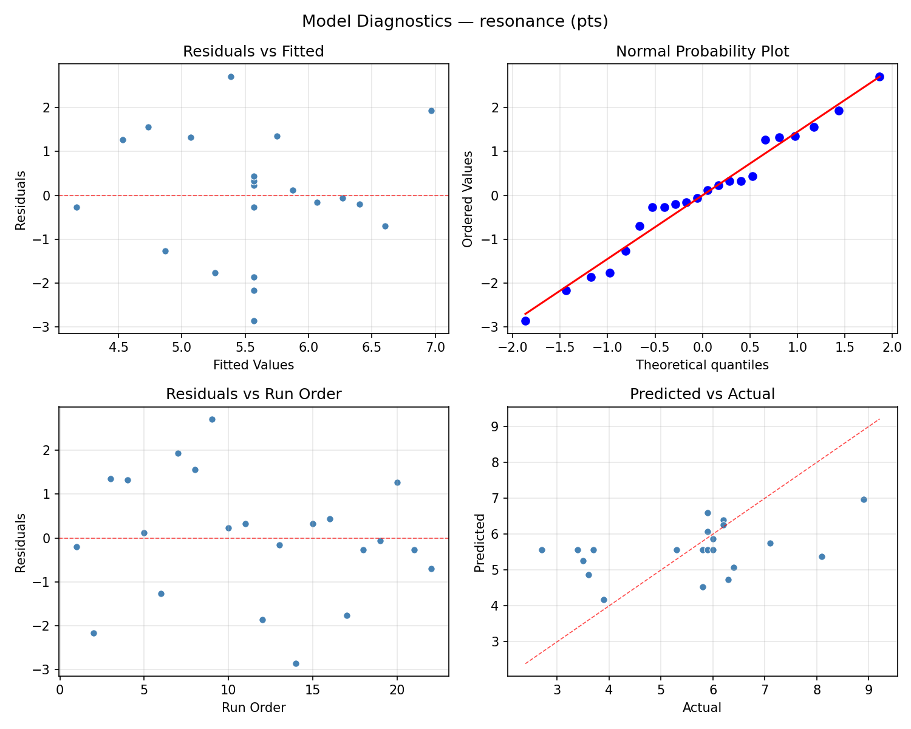
Response: overtone_control
Top factors: batter_torque (69.7%), reso_torque (20.0%), muffle_pct (10.3%).
ANOVA
| Source | DF | SS | MS | F | p-value |
|---|
| Source | DF | SS | MS | F | p-value |
| batter_torque | 4 | 14.0777 | 3.5194 | 0.742 | 0.5866 |
| reso_torque | 4 | 2.3461 | 0.5865 | 0.124 | 0.9703 |
| muffle_pct | 4 | 0.3486 | 0.0871 | 0.018 | 0.9992 |
| Lack | of | Fit | 2 | 5.4466 | 2.7233 |
| Pure | Error | 7 | 33.1887 | | |
| Error | 9 | 38.6354 | 4.7412 | | |
| Total | 21 | 55.4077 | 2.6385 | | |
Pareto Chart
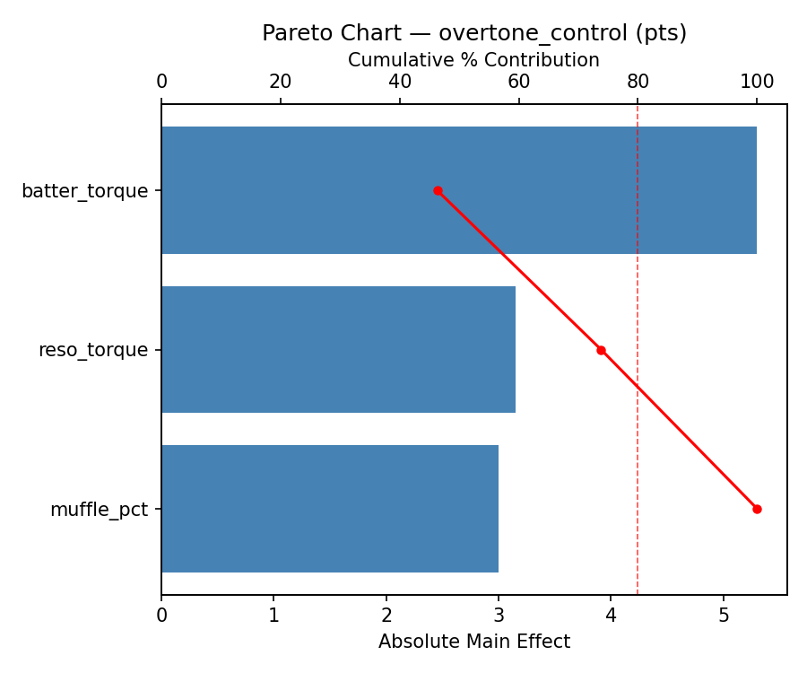
Main Effects Plot
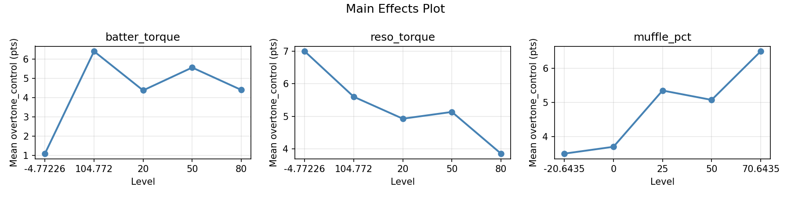
Normal Probability Plot of Effects
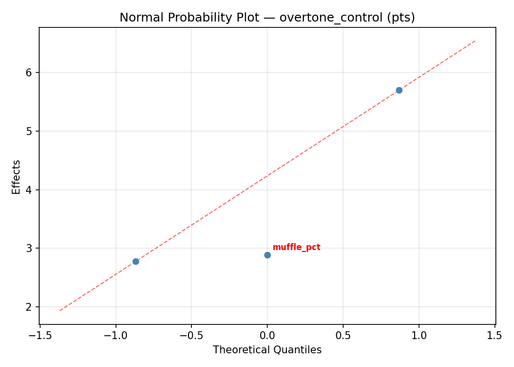
Half-Normal Plot of Effects
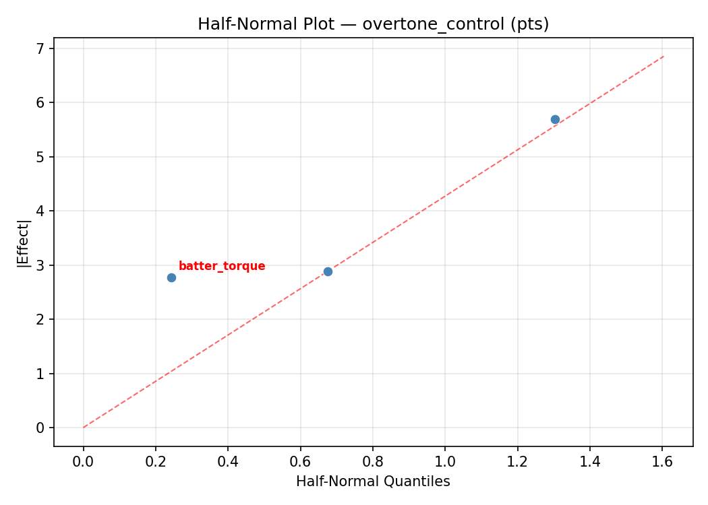
Model Diagnostics
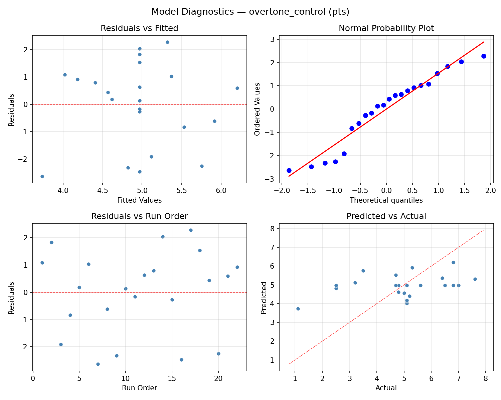
Response Surface Plots
3D surfaces fitted with quadratic RSM. Red dots are observed data points.
overtone control batter torque vs muffle pct
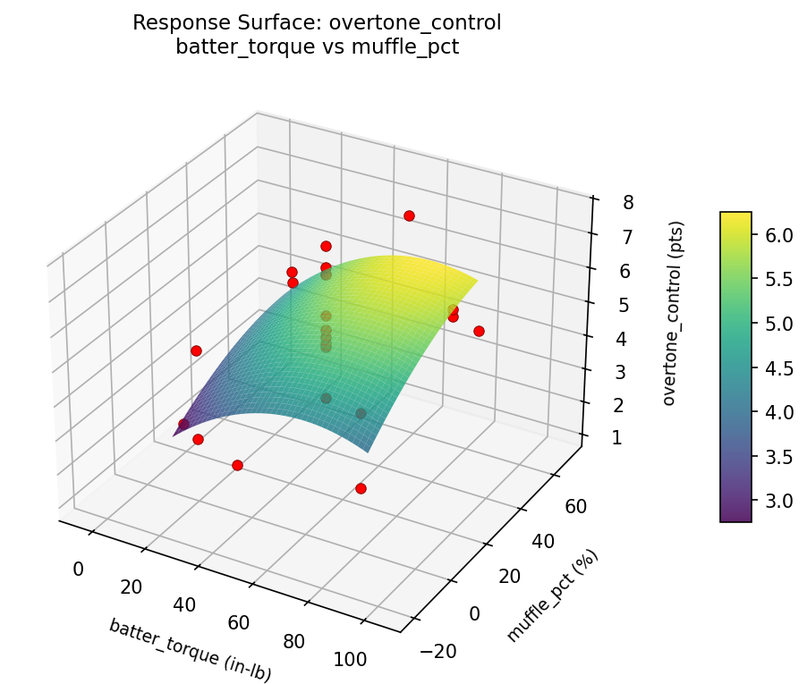
overtone control batter torque vs reso torque
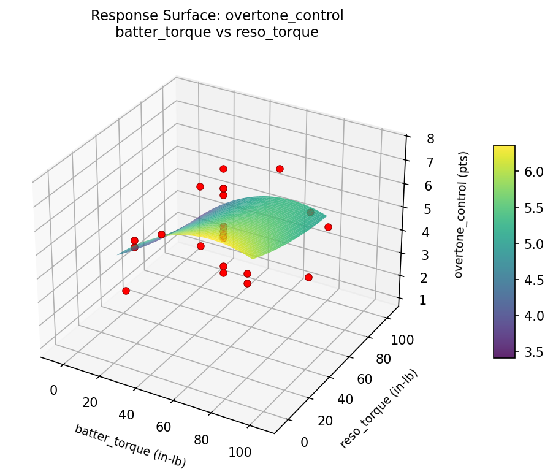
overtone control reso torque vs muffle pct
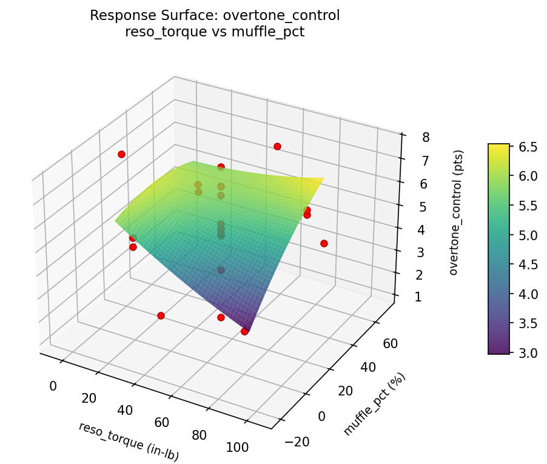
resonance batter torque vs muffle pct
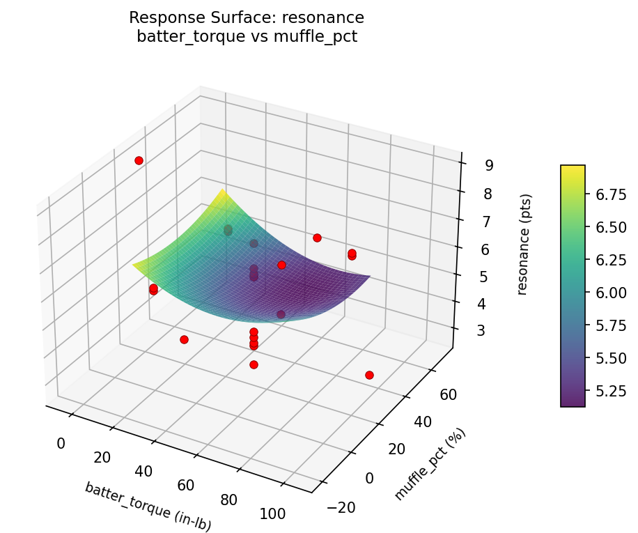
resonance batter torque vs reso torque
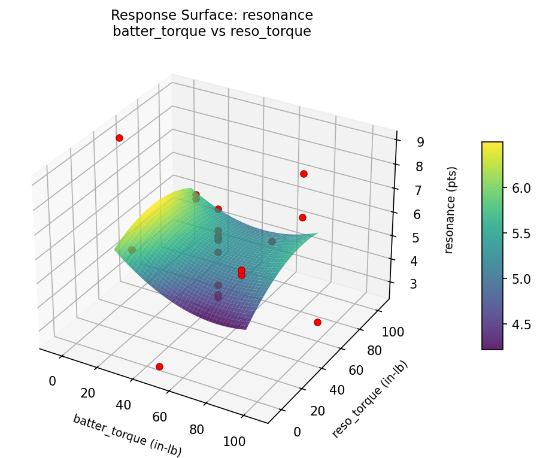
resonance reso torque vs muffle pct
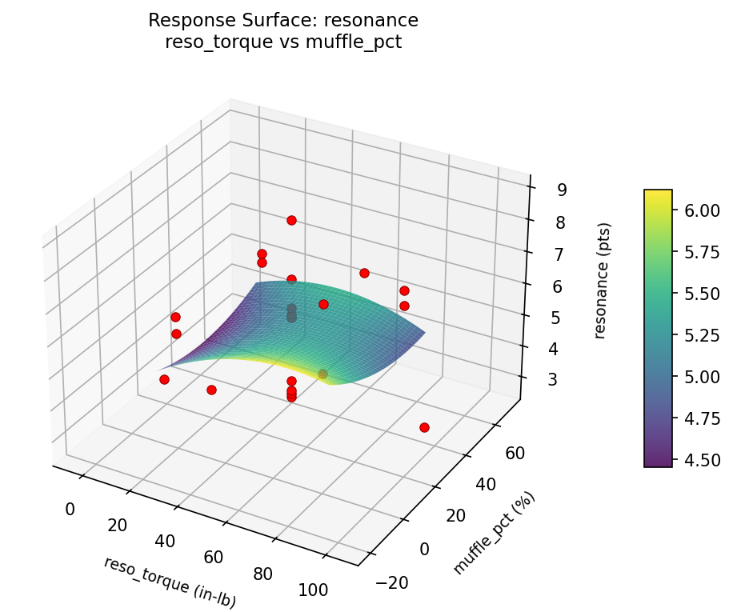
Multi-Objective Optimization
When responses compete, Derringer–Suich desirability finds the best compromise.
Each response is scaled to a 0–1 desirability, then combined via a weighted geometric mean.
Overall Desirability
D = 0.6024
Per-Response Desirability
| Response | Weight | Desirability | Predicted | Dir |
|---|
resonance |
1.5 |
|
6.30 0.5733 6.30 pts |
↑ |
overtone_control |
1.5 |
|
5.30 0.6329 5.30 pts |
↑ |
Recommended Settings
| Factor | Value |
|---|
batter_torque | 50 in-lb |
reso_torque | 104.772 in-lb |
muffle_pct | 25 % |
Source: from observed run #8
Trade-off Summary
Sacrifice = how much worse than single-objective best.
| Response | Predicted | Best Observed | Sacrifice |
|---|
overtone_control | 5.30 | 7.60 | +2.30 |
Top 3 Runs by Desirability
| Run | D | Factor Settings |
|---|
| #18 | 0.5845 | batter_torque=50, reso_torque=50, muffle_pct=25 |
| #1 | 0.5813 | batter_torque=20, reso_torque=20, muffle_pct=0 |
Model Quality
| Response | R² | Type |
|---|
overtone_control | 0.0886 | linear |
Full Multi-Objective Output
============================================================
MULTI-OBJECTIVE OPTIMIZATION
Method: Derringer-Suich Desirability Function
============================================================
Overall desirability: D = 0.6024
Response Weight Desirability Predicted Direction
---------------------------------------------------------------------
resonance 1.5 0.5733 6.30 pts ↑
overtone_control 1.5 0.6329 5.30 pts ↑
Recommended settings:
batter_torque = 50 in-lb
reso_torque = 104.772 in-lb
muffle_pct = 25 %
(from observed run #8)
Trade-off summary:
resonance: 6.30 (best observed: 8.90, sacrifice: +2.60)
overtone_control: 5.30 (best observed: 7.60, sacrifice: +2.30)
Model quality:
resonance: R² = 0.1828 (linear)
overtone_control: R² = 0.0886 (linear)
Top 3 observed runs by overall desirability:
1. Run #8 (D=0.6024): batter_torque=50, reso_torque=104.772, muffle_pct=25
2. Run #18 (D=0.5845): batter_torque=50, reso_torque=50, muffle_pct=25
3. Run #1 (D=0.5813): batter_torque=20, reso_torque=20, muffle_pct=0
Full Analysis Output
=== Main Effects: resonance ===
Factor Effect Std Error % Contribution
--------------------------------------------------------------
batter_torque 2.9000 0.3297 46.0%
reso_torque 2.2750 0.3297 36.1%
muffle_pct 1.1250 0.3297 17.9%
=== ANOVA Table: resonance ===
Source DF SS MS F p-value
-----------------------------------------------------------------------------
batter_torque 4 12.0377 3.0094 0.893 0.5061
reso_torque 4 7.5661 1.8915 0.562 0.6967
muffle_pct 4 1.5561 0.3890 0.115 0.9737
Lack of Fit 2 5.4879 2.7439 0.815 0.4808
Pure Error 7 23.5800 3.3686
Error 9 29.0679 3.3686
Total 21 50.2277 2.3918
=== Summary Statistics: resonance ===
batter_torque:
Level N Mean Std Min Max
------------------------------------------------------------
-4.77226 1 3.5000 0.0000 3.5000 3.5000
104.772 1 6.4000 0.0000 6.4000 6.4000
20 4 6.2500 0.5916 5.8000 7.1000
50 12 5.8000 1.6091 3.6000 8.9000
80 4 4.5000 1.6990 2.7000 6.0000
reso_torque:
Level N Mean Std Min Max
------------------------------------------------------------
-4.77226 1 3.7000 0.0000 3.7000 3.7000
104.772 1 5.8000 0.0000 5.8000 5.8000
20 4 5.9750 0.1708 5.8000 6.2000
50 12 5.8333 1.6434 3.5000 8.9000
80 4 4.7750 2.0710 2.7000 7.1000
muffle_pct:
Level N Mean Std Min Max
------------------------------------------------------------
-20.6435 1 5.9000 0.0000 5.9000 5.9000
0 4 5.6750 1.5903 3.4000 7.1000
25 12 5.6167 1.7466 3.5000 8.9000
50 4 5.0750 1.5840 2.7000 5.9000
70.6435 1 6.2000 0.0000 6.2000 6.2000
=== Main Effects: overtone_control ===
Factor Effect Std Error % Contribution
--------------------------------------------------------------
batter_torque 3.4000 0.3463 69.7%
reso_torque 0.9750 0.3463 20.0%
muffle_pct 0.5000 0.3463 10.3%
=== ANOVA Table: overtone_control ===
Source DF SS MS F p-value
-----------------------------------------------------------------------------
batter_torque 4 14.0777 3.5194 0.742 0.5866
reso_torque 4 2.3461 0.5865 0.124 0.9703
muffle_pct 4 0.3486 0.0871 0.018 0.9992
Lack of Fit 2 5.4466 2.7233 0.574 0.5875
Pure Error 7 33.1887 4.7412
Error 9 38.6354 4.7412
Total 21 55.4077 2.6385
=== Summary Statistics: overtone_control ===
batter_torque:
Level N Mean Std Min Max
------------------------------------------------------------
-4.77226 1 7.6000 0.0000 7.6000 7.6000
104.772 1 4.7000 0.0000 4.7000 4.7000
20 4 4.2000 0.9899 3.2000 5.1000
50 12 4.7000 1.7756 1.1000 6.8000
80 4 5.9500 1.1121 4.8000 7.0000
reso_torque:
Level N Mean Std Min Max
------------------------------------------------------------
-4.77226 1 5.6000 0.0000 5.6000 5.6000
104.772 1 5.1000 0.0000 5.1000 5.1000
20 4 4.6250 0.7676 3.5000 5.2000
50 12 4.8333 1.9518 1.1000 7.6000
80 4 5.5250 1.7689 3.2000 7.0000
muffle_pct:
Level N Mean Std Min Max
------------------------------------------------------------
-20.6435 1 4.7000 0.0000 4.7000 4.7000
0 4 4.9500 1.4731 3.2000 6.8000
25 12 4.9083 1.9635 1.1000 7.6000
50 4 5.2000 1.4306 3.5000 7.0000
70.6435 1 5.1000 0.0000 5.1000 5.1000
Optimization Recommendations
=== Optimization: resonance ===
Direction: maximize
Best observed run: #7
batter_torque = 50
reso_torque = 50
muffle_pct = 70.6435
Value: 8.9
RSM Model (linear, R² = 0.0581, Adj R² = -0.0989):
Coefficients:
intercept +5.5682
batter_torque -0.0329
reso_torque +0.4147
muffle_pct +0.1609
RSM Model (quadratic, R² = 0.3170, Adj R² = -0.1953):
Coefficients:
intercept +4.8958
batter_torque -0.0329
reso_torque +0.4147
muffle_pct +0.1609
batter_torque*reso_torque -0.2875
batter_torque*muffle_pct -0.2875
reso_torque*muffle_pct +0.6875
batter_torque^2 +0.1662
reso_torque^2 +0.2562
muffle_pct^2 +0.5862
Curvature analysis:
muffle_pct coef=+0.5862 convex (has a minimum)
reso_torque coef=+0.2562 convex (has a minimum)
batter_torque coef=+0.1662 convex (has a minimum)
Notable interactions:
reso_torque*muffle_pct coef=+0.6875 (synergistic)
Predicted optimum (from linear model, at observed points):
batter_torque = 50
reso_torque = 104.772
muffle_pct = 25
Predicted value: 6.3254
Surface optimum (via L-BFGS-B, linear model):
batter_torque = 20
reso_torque = 80
muffle_pct = 50
Predicted value: 6.1767
Model quality: Weak fit — consider adding center points or using a different design.
Factor importance:
1. muffle_pct (effect: 3.8, contribution: 64.6%)
2. reso_torque (effect: 1.5, contribution: 26.2%)
3. batter_torque (effect: 0.5, contribution: 9.3%)
=== Optimization: overtone_control ===
Direction: maximize
Best observed run: #17
batter_torque = 50
reso_torque = 50
muffle_pct = 25
Value: 7.6
RSM Model (linear, R² = 0.1031, Adj R² = -0.0464):
Coefficients:
intercept +4.9682
batter_torque +0.3702
reso_torque -0.3637
muffle_pct -0.3465
RSM Model (quadratic, R² = 0.4775, Adj R² = 0.0855):
Coefficients:
intercept +5.7906
batter_torque +0.3702
reso_torque -0.3637
muffle_pct -0.3465
batter_torque*reso_torque +0.3125
batter_torque*muffle_pct +0.5375
reso_torque*muffle_pct -0.2875
batter_torque^2 -0.3912
reso_torque^2 +0.0138
muffle_pct^2 -0.8562
Curvature analysis:
muffle_pct coef=-0.8562 concave (has a maximum)
batter_torque coef=-0.3912 concave (has a maximum)
reso_torque coef=+0.0138 negligible curvature
Notable interactions:
batter_torque*muffle_pct coef=+0.5375 (synergistic)
batter_torque*reso_torque coef=+0.3125 (synergistic)
Predicted optimum (from quadratic model, at observed points):
batter_torque = 50
reso_torque = -4.77226
muffle_pct = 25
Predicted value: 6.5007
Surface optimum (via L-BFGS-B, quadratic model):
batter_torque = 51.9153
reso_torque = 20
muffle_pct = 24.6398
Predicted value: 6.1704
Model quality: Weak fit — consider adding center points or using a different design.
Factor importance:
1. muffle_pct (effect: 4.2, contribution: 50.6%)
2. batter_torque (effect: 2.7, contribution: 32.3%)
3. reso_torque (effect: 1.4, contribution: 17.0%)